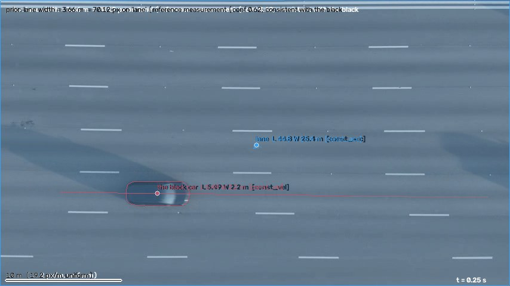

← 视频与问题 · 评估员逐视频报告（由 outputs/eval/*.md 生成）
主因层：路由（Qwen 不采信好提示，用常识值 4.5 m / 2.0 m / 24.5 m/s 覆盖测量）；速度题另有真值时间基存疑（真值按 20.62 fps 原片，CSV/验证视频是 24 fps） 根因：场景值三题都对（5.49 / 2.20 / 33.87，conf 0.62 / 0.62 / 0.56），被 Qwen 的典型值答案替换（valcur10 0.8 → 场景直用 0.9）；refmeasure 的 70.1 px 数值可用（5 条相邻车道均值 70.6 px），但它是一条斜线段的欧氏长度（真实垂距 67.2 px），三帧量了三对不同的车道线；速度上限 0.8 是因为真值用的时间基与 CSV fps 不同，不是测量问题
internet_0001（俯拍高速，黑车从左向右匀速行驶；prior "lane width = 3.66 m"）
评估输入：outputs/val_mh3_valcur10_routed.csv；2D 场景 outputs/scene2d_eval/s2d_v7/internet_0001.json（与 s2d_mh3_valcur10 数值相同）；refmeasure outputs/refmeasure_v7/internet_0001.json；跟踪 tracks_v9。 叠加图和截图（scratchpad）：
internet_0001/internet_0001_overlay_0.25s.jpg
（同目录有 0.6s / 1s；重跑的场景 json 也在 s2d/ 里）- 车框放大图：
.../scratchpad/eval_0001/car_crop_f06.png、car_crop_f15.png、car_crop_f22.png（红 = 框，绿 = 掩码凸包） - 原帧
.../scratchpad/eval_0001/f00.png…f30.png；测试集同类视频抽帧.../scratchpad/eval_0001/test_peek_grid.jpg

题目表
| 题 | 答案 | 几何 | 场景值 (conf) | Qwen (a / b / v9 → 中位) | 最终 (valcur10) | MRA | 场景直用后 | 主因层 |
|---|---|---|---|---|---|---|---|---|
| 车长 m | 5.81 | 5.585 | 5.487 (0.619) | 4.5 / 4.5 / 4.5 → 4.5 | 4.5 vlm | 0.7 | 5.487 → 0.9 | 路由（Qwen 常识值） |
| 车宽 m | 2.21 | 2.297（标 width-unobservable，conf 0.31） | 2.200 (0.619) | 2.0 / 2.0 / 2.0 → 2.0 | 2.0 vlm | 0.9 | 2.200 → 1.0 | 路由；几何误标侧视 |
| 平均速度 m/s | 29.3 | 32.29 | 33.87 (0.557) | 24.5 / 24.5 / 13.9 → 24.5 | 24.5 vlm | 0.8 | 33.87 → 0.8 | 真值时间基存疑；路由 |
outputs/val_mh3_valcur10_s2dv7_direct01_routed.csv（场景直用，Qwen 只在 conf < 0.1 时用）里这三题已经是 0.9 / 1.0 / 0.8，视频均分 0.8 → 0.9。
逐层排查
- 解析：length / width / average speed 都对；物体 "the black car"、prior 对象 "lane"（role=structure、track=false、reference_only）正确。
- 清单：2 个物体（车 + lane），无多余节点；场景图 car on floor、car contact lane，per-frame 全部 "on lane"，与画面一致。
- 跟踪（tracks_v9）：车框 0–27 帧都是黑车本身。凸包紧贴车身，不含车影（f06/f15 车在高架阴影里，f22 在阳光下，凸包都没有把车左上方的暗影包进去）。框 107×44 px，凸包 along 105.1 / across 42.2 px。帧 26–27 贴右边界截断，已标 outlier。
- 车长随画面位置变：帧 0（x≈100）109 px，帧 12–17（画面中央）103–104 px，帧 22–25 108–109 px；中央最短，两侧因透视露出车头车尾侧面而变长（±3%）。中位数 105 px，与取中央值差 1–2%，低于报告门槛。
- 尺度（重点核对 refmeasure 70.1 px）：
- 相机静止（各帧车道线位置一致到 0.3 px），俯拍，车道线水平，略倾斜（右半比左半低 1–3 px，约 0.3°）。
- 逐帧用顶帽 + 行投影量车道虚线中心 y（左半幅，f00/f15/f30 一致）：77.7、146.0、218.0、289.0、356.0、430.5（上方 12 px 处是路肩双实线）。相邻间距 68.1 / 72.2 / 70.6 / 67.2 / 74.6 px，5 条车道均值 70.6 px、中位 70.6 px；间距不随 y 单调变化，不是透视，是各车道本身差 ±5%。黑车所在车道（289 ↔ 356）67.2 px。
- refmeasure 三帧分别量了三对不同的车道线：f6 取 (114,355.7)→(134,288.5)，即 356↔289 这对，但 p1 在缩放精修后横移了 20 px，返回的是斜线欧氏长度 √(20²+67.2²)=70.1（dir 偏离竖直 16.6°，却仍标 "perpendicular"；精修前的 "first" 结果 66.7 是对的）；f15 在 x=11 量 217→290，返回 72.96（这对线的中心距是 71）；f24 量 79.6→147.7，68.5（对的）。中位数 70.1 刚好落在车道均值附近，数值可用，但方法上会系统性偏大（斜线只会更长）。
- 场景 m/px = 3.66/70.12 = 0.0522。按 5 条车道均值 70.6 px → 0.0518；按本车道 67.2 px → 0.0545。
- 运动：车全程匀速，中心 x 每帧位移 25.9–28.0 px（平均 27.1 px/帧 = 651 px/s @24 fps），没有起动 / 停止，窗口选整段还是运动段结果一样。场景值取的是未截断的车尾边缘，帧 0–24 共 649 px / 1.0 s → 33.87 m/s。几何 32.29（618 px/s）偏低 5%，原因没细查（不影响结论）。
- 提示与路由：Qwen 三路都看到几何提示（5.58 "medium" / 2.30 "low" / 32.3 "medium"）和 2D 提示（5.49 / 2.20 / 33.87，conf ≥ 0.5 才显示），raw 输出只有
{"answer": 4.5}、{"answer": 2.0}、{"answer": 24.5}：两个提示都没采用，答的是"普通轿车 4.5 m × 2.0 m、高速约 88 km/h"这类常识值，v9 那一路速度答到 13.9。宽度的几何提示被solve.py标成 "width unobservable in a side-view box"（conf 0.31 → 提示里写 reliability low），这是误标：画面是俯拍，框的竖边就是车宽。 - 真值：车长、车宽和车道尺度自洽（宽 2.21 m 对应 42.2 px → 车道 69.8 px；长 5.81 m 对应约 110 px，等于车在画面两侧时的框长）。速度不自洽：同一尺度下画面速度是 33.7–34.4 m/s，真值 29.3 小 1.16 倍。测试集同名文件（3840×2160）也是 31 帧，容器帧率 14681/712 = 20.62 fps（时长 1.503 s）；测试集的 internet_0001_segmented 是 24 fps 36 帧，也是 1.5 s。按 20.62 fps 算：27.1 px/帧 × 20.62 × 0.0522 = 29.2 m/s，与真值一致。所以真值用的是原片时间基（1.5 s），而 CSV fps=24 和验证集视频（23.976 fps，1.29 s）把时间压短了 14%。
按画面的估计
| 题 | 车道均值 70.6 px | 本车道 67.2 px | 备注 |
|---|---|---|---|
| 车长 | 104–105 px → 5.40–5.45 m | 5.67–5.72 m | 真值 5.81 ≈ 两侧帧的 110 px |
| 车宽 | 42–43 px → 2.18–2.23 m | 2.29–2.34 m | 真值 2.21 |
| 平均速度 | 651 px/s → 33.7 m/s（24 fps）/ 29.0 m/s（20.62 fps） | 35.5 / 30.5 | 真值 29.3 只能在 20.62 fps 下得到 |
根因结论
- 路由：Qwen 拿常识值覆盖了正确的测量（三题都是）。场景 conf 0.62 / 0.62 / 0.56，几何也接近。新的"场景直用"路由（Qwen 只在 conf < 0.1 时用）把这个视频从 0.8 提到 0.9，已经由
route --scene2d-direct-conf 0.1解决（in_progress 里"Qwen 不采信好的 2D 提示（internet_0001）——等置信度路由"这一条可以关掉）。 - 速度：真值时间基存疑（与画面 / 尺度不自洽 1.16 倍，正好等于测试集原片帧率和 CSV fps 之比）。逻辑上不该改：验证集另外两个容器帧率与 CSV 不一致的视频，速度真值跟的是 CSV fps（internet_0019：CSV 30 / 原片 22.59，30 fps 下的场景值 3.51、1.96 对真值 3.7、1.93；internet_0027：CSV 25 / 原片 22.30，25 fps 下 25.1 对 26.82），改用原片帧率会让这两个视频变差。速度题在测量正确的情况下上限就是 0.8。
- refmeasure 方法缺陷（这里数值碰巧没出错）：两线间距取的是 p0–p1 的欧氏长度，没有投影到车道法向；三帧量的是三对不同的车道线。数值偏差 +2.9 / +2.0 / 0 px，中位数恰好接近 5 条车道的均值，所以本视频没有掉分。但测试集 32 道计分的 lane width 题全靠它定尺度，而且有竖向车道（0006 / 0007 / 0012）和"中心虚线 ↔ 边缘实线"的两车道路（0006 / 0007 / 0015），需要把方法做稳。
逐条问题（按影响面排序）
1. Qwen 不采信好的测量提示，回答典型值（已在修：置信度路由 / 场景直用）
- 现象：internet_0001 三题场景值 5.49 / 2.20 / 33.87（MRA 0.9 / 1.0 / 0.8），Qwen 4.5 / 2.0 / 24.5（0.7 / 0.9 / 0.8）；raw 输出只有 answer，没有推理。
- 根因层：路由 / 提示。
- 同类：测试集 lane width prior 共 35 题（8 个视频：internet_0001 / 0001_segmented / 0002 / 0002_segmented / 0006 / 0007 / 0012 / 0015），去掉与验证集重叠的 0001 三题后 32 题计分，都是俯拍道路上的车长 / 车宽 / 车速，Qwen 在这类题上容易答"标准车 4.5 m"这种值。
- 建议：保持场景直用（conf ≥ 0.1）为默认；另外查一下测试集 v8 这 32 题里 Qwen 和场景值相差 >20% 的比例，作为 Qwen 常识锚定的规模估计（只看分布，不看答案）。验收：验证集 internet_0001 三题都取 s2d，S2 不退步。
- 负责人：qp-tools（route），已在做。
2. refmeasure 两线间距没有投影到法向，各帧量不同的线对（新）
- 现象：
outputs/refmeasure_v7/internet_0001.json里 f6 的 p0 (114,355.7)、p1 (134,288.5)，dir (0.285,−0.959)，相对车道法向偏 16.6°，却标 relation "perpendicular"，px 70.12 = 斜线长度（真实垂距 67.2）；精修前的 "first" 66.7 是对的，缩放精修把 p1 横移了 20 px。f15 返回 72.96（这对线中心距 71）。三帧分别量了 356↔289、218↔290、80↔148 三对线。 - 根因层：工具 / refmeasure（尺度观测）。
- 同类：测试集 32 道计分的 lane width 题；refmeasure 的其它 "两条线之间的距离" 类 prior（tiles、刻度）也是同一段代码。竖向车道（0006 / 0007 / 0012）如果方向判断错，误差会比这里大。
- 通用修改建议： (a) 结构方向已知时（scene2d 把 lane 的朝向设成车辆行驶方向，refmeasure 也能拿到）只取 |(p1−p0)·n|，n 是车道法向；|cos| < cos 10° 的线对判为无效，不要只给标签。 (b) 相机静止时在中值背景帧上沿法向做强度剖面（顶帽 + 投影，或沿法向的多条扫描线），取所有相邻车道线中心的间距，报告中位数和离散度；视频里有多对时列出每一对，被问车辆所在车道的那对也写进结果，供 scene2d 做一致性检查（本视频：68.1 / 72.2 / 70.6 / 67.2 / 74.6，中位 70.6，本车道 67.2）。 (c) 中心虚线和边缘实线都算车道线；路肩到第一条线的间距（这里 65.7）不算车道宽，要排除。 验收：internet_0001 lane px 在 70.6±1.5 之间，dir 与法向夹角 <2°，per_frame 的线对标明是哪两条；在 internet_0002（同一条路）上结果与 0001 一致到 2%；scene2d 验证集 S2 不退步。
- 负责人：qp-tools（refmeasure）。
3. 几何流水线在俯拍视频上把车宽标成 width-unobservable（新）
- 现象：
outputs/val_geo_mh3_valcur10_a.csvinternet_0001 车宽，methodwidth|width-unobservable，notes "width unobservable in a side-view box"，conf 0.31 → Qwen 提示里写 "reliability low"，几何值 2.297 其实是对的（MRA 1.0）。 - 根因层：几何
pipeline/solve.py（w > 1.3h 就标 unobservable，不看视角）。 - 同类：所有俯拍视频的 width 题，例如测试集 internet_0001 / 0002 及其 segmented 版的车宽（4 题，0001 两题与验证集重叠）、其它俯拍的宽度题；路由里对这个标记的特殊处理（route.UNOBSERVABLE）也会跟着误触发。
- 建议：只有侧视时才标——场景图 objects_2d.motion_plane == "top-down"（或 scene2d 的视角判断）时不标，width 取跨朝向的框边。验收：internet_0001 车宽不再带标记、conf = 尺度 conf；验证集 simulation_0015 / 0009 / 0300 这些侧视 width 题照样带标记。
- 负责人：qp-tools（solve 由 coordinator 指定归属；它属于几何流水线）。
4. 静止结构层被拟合运动段（外观问题，低优先）
- 现象：lane 层是整幅画面的框（0,4,854,480），moving=False，但 segments 是 const_acc 0–0.33 s / circle 0.375–0.83 s / const_vel 0.875–1.25 s，叠加图上显示 "lane L 44.8 W 26.4 m [const_acc]"。答案不用这一层（尺度走 refmeasure），所以不掉分，但叠加图和 critic 看到的信息是错的。
- 根因层：scene2d 层建模。
- 建议：role=structure 或 track=false 的层不拟合运动模型（固定 static），叠加图改为画 refmeasure 的 p0–p1 线段和 px 值，方便人和 critic 核对尺度。验收：internet_0001 叠加图上 lane 显示为 static，并画出参考线段。
- 负责人：qp-code-2d。
真值存疑（单列，不改逻辑迎合）
- internet_0001 平均速度 29.3 m/s：同一尺度下画面速度 33.7–34.4 m/s（车长 / 车宽真值和车道尺度给出的 m/px 都一样），差 1.16 倍；测试集原片 31 帧、20.62 fps（1.503 s），segmented 版 36 帧 @24 fps 也是 1.5 s，按 20.62 fps 算出 29.2，与真值一致。所以真值是按原片时间基算的，CSV 的 fps=24 不对应真值的时间。不建议改用容器帧率：验证集 internet_0019 / internet_0027 的容器帧率也和 CSV 不一致，但它们的速度真值跟的是 CSV fps。测试集 internet_0002（同一条路、CSV 24 / 原片 19.61）的速度题可能也是这种情况，不作处理。
- 顺带记录：测试集有 69 个视频（307 题）的容器帧率与 CSV fps 相差 >3%（多数是 internet_* 和 simulation_0008–0038 一族），只说明 CSV fps 是唯一一致的时间基，管线继续用 CSV fps。
测试集 lane width 题
35 题 / 8 个视频（internet_0001 3、0001_segmented 3、0002 3、0002_segmented 3、0006 6、0007 4、0012 8、0015 5），其中 internet_0001 的 3 题与验证集重叠、不计分，计分 32 题。抽帧看全是俯拍：0002 和 0001 是同一条路（横向 5 车道）；0006 / 0007 是竖向两车道乡间路（中心虚线 + 两侧实线）；0012 是竖向的跨水大桥多车道；0015 是横向两车道。题型：车长 15、速度类 15（speed 11 + velocity 4）、车宽 4、平均车距 1。